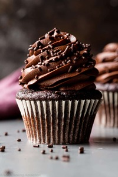
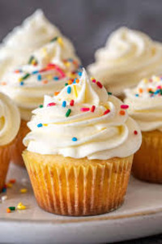
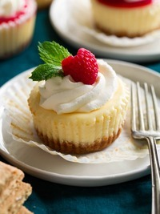
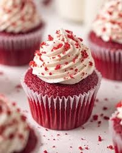
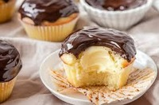
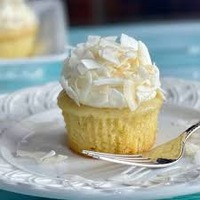
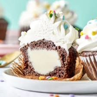
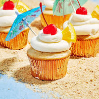
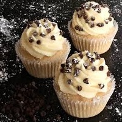
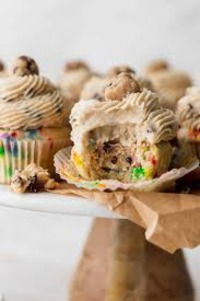

| Picture | Cookie Types | Description | Price | Allergens | On Hand |
|---|---|---|---|---|---|
|  | Classic chocolate Cupcake | A timeless favorite soft, fluffy vanilla cake topped with smooth, creamy vanilla buttercream. Simple, elegant, and irresistibly sweet in every bite. | $15 | Wheat (gluten), Eggs, Milk, Soy | 24 Dozen |
|  | Classic Vanilla Cupcake | Rich, moist chocolate cake crowned with silky chocolate frosting. Perfect for true chocolate lovers craving a classic indulgence. | $15 | Wheat (gluten), Eggs, Milk, Soy | 24 Dozen |
|  | Cheese Cake Cupcake | A luscious fusion of cupcake and cheesecake creamy cheesecake filling baked inside a tender vanilla cupcake, finished with a swirl of cream cheese frosting. | $15 | Wheat (gluten), Eggs, Milk, Soy | 24 Dozen |
|  | Red Velvet Cupcakes | Velvety cocoa cake with a hint of tang, topped with decadent cream cheese frosting. A Southern inspired classic with a luxurious texture and flavor. | $15 | Wheat (gluten), Eggs, Milk, Soy | 24 Dozen |
|  | Boston Cream Cupcakes | A moist vanilla cupcake filled with silky vanilla custard and finished with a glossy layer of rich chocolate ganache. Like a Boston Cream Pie in cupcake form. | $15 | Wheat (gluten), Eggs, Milk, Soy | 24 Dozen |
|  | Coconut Cream Cupcakes | Light and fluffy coconut infused cake topped with creamy coconut frosting and sprinkled with toasted coconut flakes for tropical perfection. | $15 | Wheat (Gluten), Eggs, Milk, Soy, Tree Nuts (Coconut) | 24 Dozen |
|  | Ice Cream Stuffed Cupcakes | A fun twist on dessert a tender cupcake filled with your favorite ice cream flavor and topped with whipped cream frosting. Cool, creamy, and delightfully unexpected. | $15 | Wheat (gluten), Eggs, Milk, Soy | 24 Dozen |
|  | Bahama Mama Cupcakes | A tropical escape in every bite pineapple and coconut cake infused with a hint of rum flavor, topped with a vibrant fruit infused frosting and a touch of paradise. | $15 | Wheat (gluten), Eggs, Milk, Soy | 24 Dozen |
| Dole Whip Cupcakes | Inspired by the iconic treat a light pineapple-flavored cupcake topped with smooth pineapple vanilla swirl frosting for a refreshing, sunny taste. | $15 | Wheat (gluten), Eggs, Milk, Soy | 24 Dozen | |
|  | Cannoli Cupcakes | An Italian-inspired delight rich vanilla cupcake filled with sweet ricotta cream dotted with chocolate chips, finished with a dusting of powdered sugar and a mini cannoli on top. | $15 | Wheat (gluten), Eggs, Milk, Soy | 24 Dozen |
|  | Cookie Dough Cupcakes | Soft chocolate chip cupcake with a gooey cookie dough center, topped with brown sugar buttercream and a bite sized cookie garnish. The best of both worlds. | $15 | Wheat (gluten), Eggs, Milk, Soy | 24 Dozen |